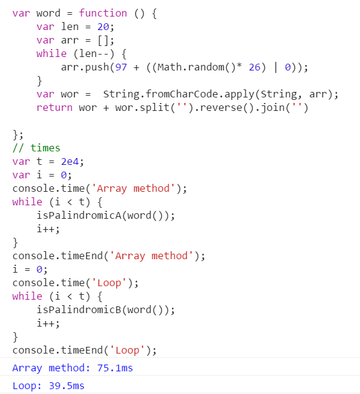

Q1 判断一个单词是否为回文
初看到这个题目，立马想到了数组的reverse()方法，然而看了@文蔺的文章关于前端常见算法面试题的一些思考,发现用循环判断居然比reverse()方法快,真的是简单不一定有效率。
1 2 3 4 5 6 7 8 9 10 11 12 13 14 15 16 17 18
| function isPalindromicA(w){ return w === w.split('').reverse().join('') } function isPalindromicB(w){ var len = w.length; var mid = Math.ceil(len/2); while(mid <= len-1){ if(w[mid] !== w[len-mid-1]){ return false } mid++; } return true; }
|
全随机字符串比较结果如下:
这里采用了关于前端常见算法面试题的一些思考这篇文章的比较方法
全回文字符串比较结果如下:

Q2 整型数组去重
给你一个整型数组，要求去除重复的数字，使得数组各项均不同
1 2 3 4 5 6 7 8 9 10 11 12 13 14 15
| function unique(arr){ var obj = {}; var data = []; for(var i = 0,len = arr.length;i<len;i++){ if(!obj[arr[i]]){ obj[arr[i]] = true; data.push(arr[i]) } } } function unique(arr){ return Array.from(new Set(arr)) }
|
MDN Array.from()
MDN Set
扩展一下:若给的数组中不仅仅有数字还是字符，该如何改写代码?
由于[]下标方法会把其下标内容转换为字符串，所以会造成obj[1]和obj['1']读取到的值相同
1 2 3 4 5 6 7 8 9 10 11 12 13 14 15
| function unique(arr){ var obj = {}; var data = []; var prefix = ''; for(var i = 0,len = arr.length;i<len;i++){ if(typeof arr[i] === 'string'){ prefix = 'str' } if(!obj[prefix + arr[i]]){ obj[prefix + arr[i]] = true; data.push(arr[i]); } } }
|
Q3 统计一个字符串中出现次数最多的字母
思路:
大体同Q2一样，取obj的key值为该位置的字母，value值为出现次数，最后看哪个value高取哪个
1 2 3 4 5 6 7 8 9 10 11 12 13 14 15 16 17 18 19 20 21 22
| function findMaxDuplicateChar(str){ if(str.length === 1){ return str } var obj = {}; for(var i = 0,len = str.length;i<len;i++){ if(!obj[str.charAt(i)]){ obj[str.charAt(i)] = 1 }else{ obj[str.charAt(i)] ++; } } var maxChar = ''; var maxValue = 1; for(var k in obj){ if(obj[k] > maxValue){ maxChar = k; macValue = obj[k]; } } return maxChar; }
|
Q4 排序算法
比较常见的就是冒泡排序和快排
1 2 3 4 5 6 7 8 9 10 11 12 13 14 15 16 17 18 19 20 21 22 23 24 25 26 27 28 29 30 31 32 33 34 35 36
| function bubbleSort(arr){ if(arr.length <= 1){ return arr } for(var i = 0,len = arr.length;i<len-1;i++){ for(var j = i+1;j<len;j++){ if(arr[i] > arr[j]){ var tem = arr[i]; arr[i] = arr[j]; arr[j] = tem } } } return arr } function quickSort(arr){ if(arr.length <= 1){ return arr } var leftArr = []; var rightArr = []; var q = arr[0]; for(var i = 1,len = arr.length;i<len;i++){ if(arr[i] > q){ rightArr.push(arr[i]) }else{ leftArr.push(arr[i]) } } return [].concat(quickSort(leftArr),[q],quick(rightArr)) }
|

快排原理，图片来源于wikipedia Quicksort
Q5 不借助临时变量，进行两个整数的交换
需要转变思维，灵活一点
1 2 3 4 5 6 7 8 9 10 11 12 13
| x = x + y; y = x - y; x = x - y; [x,y] = [y,x] x = x ^ y; y = x ^ y; x = y ^ x;
|
参考文章
前端面试中的常见的算法问题
关于前端常见算法面试题的一些思考
异或操作的妙用